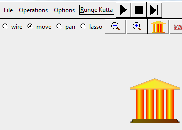

Next: Entering accounts Up: Creating a banking model Previous: Creating a banking model
The first step in creating a model with a banking sector is to click on the Godley Table Icon in the Icon Palette, and place the block somewhere on the Canvas:
